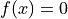

Calculate Square Root using Newton’s Method¶
In this example, we calculate the sqrt of a number using Newton’s method. The problem of finding the square root can be expressed as:
Which can be rearranged as:
Using Newton’s method, we can find numerically the approximate point at which . Repeated applications of the following expression yield increasingly accurate approximations of the Square root:
Turning this into a practical solution, the following code calculates the square root of a floating point number. An initial approximation is refined using Newton’s method until further refinements agree to within a small degree.
/* sqrt.c */
/* Jonathan P Dawson */
/* 2013-12-23 */
#include <stdio.h>
/* approximate sqrt using newton's method*/
double sqrt(double n){
double square, x, old;
x = n;
old = 0.0;
while(old != x){
old = x;
x = (x + n/x)*0.5;
}
return x;
}
/* test sqrt function*/
const int x_in = input("x");
const int sqrt_x_out = output("sqrt_x");
void main(){
double x;
while(1){
x = fget_float(x_in);
fput_float(sqrt(x), sqrt_x_out);
}
}
Note that the code isn’t entirely robust, and cannot handle special cases such as Nans, infinities or negative numbers. A simple test calculates where .